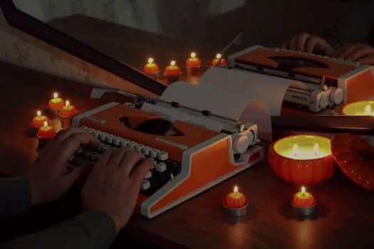
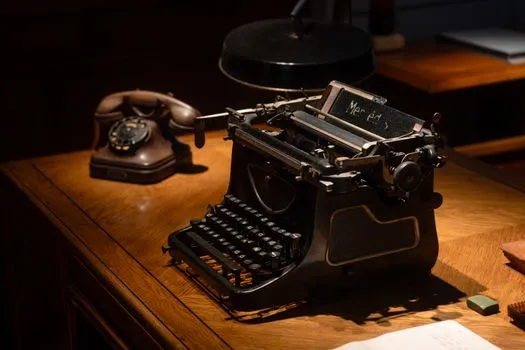
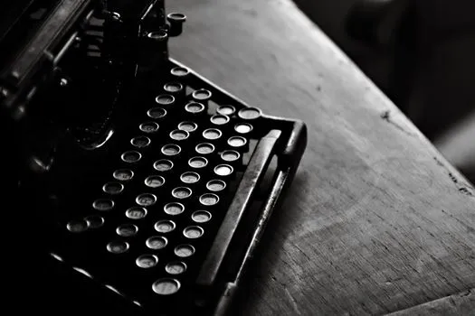

19737370Hands typing on a vintage typewriter surrounded by pumpkin candles and reflections for a cozy atmosphere.

19737370Hands typing on a vintage typewriter surrounded by pumpkin candles and reflections for a cozy atmosphere.

36040449A classic scene featuring a vintage typewriter and rotary phone on a wooden desk, evoking nostalgia and history.

32836051A classic black vintage typewriter in moody black and white on a wooden desk.
Close-up of a vintage typewriter with a sheet titled Privacy Policy.